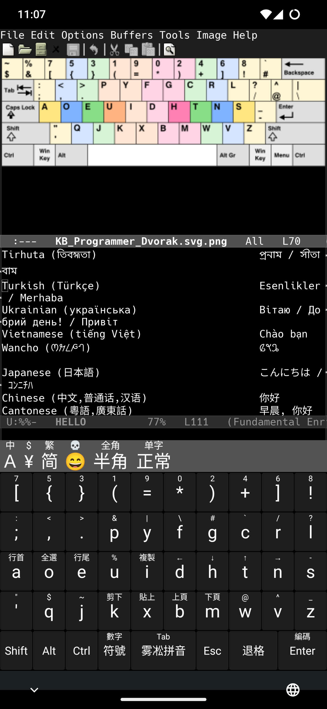

Emacs 30.1 has finally landed, and Emacs on Android (not just in terminal) presents its first stable release. I had been thinking about getting a Linux phone or tablet for a while, but now this plan was no longer needed: I can run graphical Emacs now, what else do I need?
Back to the topic today, to use Emacs on Android smoothly, there are
some works needed. To begin with, most of us need a virtual keyboard.
Ordinary virtual keyboards will not work, because usually they do not
come with modifier keys except Shift. Emacs now comes with
modifier-bar-mode to overcome this situation, which can be
put on the bottom, close to the virtual keyboard, by setting
tool-bar-position to bottom.
However, I still don't like tool-bar even if Androids are touch-screen driven devices. My solution is just to design my own virtual keyboard layout, with is possible with Trime. No more talks and let me show you the screenshot:

Note that the layout is based on Dvorak Programmer, whose original design is showed by Emacs in its image mode buffer.
Configuration Overview
Based on (xiaoqun 2016), I developed my configuration, which is hosted at Github.
My configuration uses the rime-ice schema (i.e.
configuration to Rime's backend), so to use it without changes you have
to download that too. Simply download and unzip rime-ice under /sdcard/rime (so that default.yaml is at /sdcard/rime/default.yaml).
Similarly, put my configuration YAMLs under /sdcard/rime (so default.custom.yaml is at /sdcard/rime/default.custom.yaml). There is only
2 files, thanks to Rime's patch-based customization framework:
default.custom.yaml- This is the patch for the backend. Currently I just pick rime-ice as the single element in the schema list, so that I don't have to select one when deploying.
trime.custom.yaml- This is the patch for the frontend. The base file is at shared/trime.yaml if you are interested.
The main parts of trime.custom.yaml
are:
patch/preset_color_schemes/dvorak-
this defines a color scheme, which I picked colors based on modus-vivendi.
style/color_schemeshould have select it when deploying, but sometimes it doesn't work somehow and you have to select the color scheme from the GUI setting manually. patch/preset_keyboards/dvorak-
This defines the layout for the virtual keyboard. It should be very
self-explanatory.
preset_keyboards/rime_ice/import_presetset the default layout of rime-ice to be this layout, so that we don't have to switch to it manually. patch/preset_keys/+-
this defines extra keys used in the layout.
/+is the patch's syntax for appending to thepatch/preset_keyslist, instead of overwriting it.
Extra Configuration
There are some of its configuration that is still required to be changed manually in the GUI setting. The most important ones that affect our use are under the option Virtual Keyboard - Hook. We need to turn on:
- "Ignore shift locked for 0-9" and
- "Ignore shift locked for Symbol keys".
Otherwise the layout change drastically based on Shift modifier.
Emacs side settings
You should definitely read emacs#Android and Android Readme and probably java/INSTALL too.
My setting after reading these documentations are:
(setopt overriding-text-conversion-style nil)If not changing the default for
overriding-text-conversion-style, < and > etc
are essentially self-inserted directly on my site, which is bad for an
Evil user like me.
And I ported my Emacs configuration to Android without changing too many things, so it's still keyboard driven. Thus, I need the virtual keyboard everywhere.
(setopt touch-screen-display-keyboard t)You can still hide the virtual keyboard by swipe from the left or right edges, and when scrolling it will not pop up. Touching the screen with a single click brings it back.